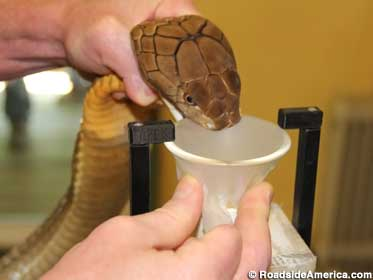

What is Snake Milking?
Snake milking is the process of extracting venom from snakes and other venomous reptiles. This venom is then used in medical research and production of anti-venoms.
Snake milking leads to life-saving innovations in the research of new medicines and treatments. Venom has been attributed with assisting the development of treatments for blood clots, high blood pressure, and heart attack risk.
Who are Snake Milkers?
Snake Milkers are herpetologists (zoologists that study reptiles and amphibians). They are highly specialized, and train for many years to handle sensitive animals in delicate situations.
It's not all milk and danger though. Snake Milkers are also responsible for calibrating and maintaining laboratories, cataloging and storing venom samples, and caring for snakes and other specimens in their care.